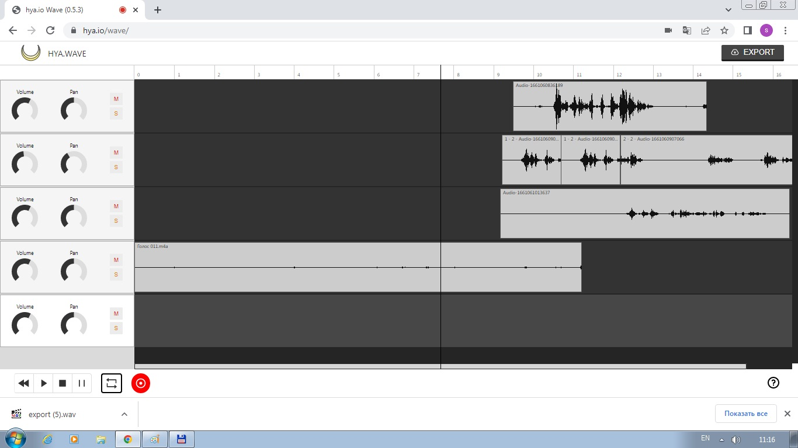

Bul audionı kesiw, nusqalaw, jaylastırıw, aralastırıw, tańlaw, sazlaw hám redaktorlaw imkaniyatın beretuǵın ápiwayı instrument bolıp tabıladı. Óz gezeginde, bul mikrofondı aktivlestiriw hám jazıwǵa ruxsat beriw arqalı betten jazıp alıw imkaniyatın beredi. Tap sonday, onıń eski versiyasında siz audionıń bir bólegine yamasa barlıǵına 10 nan artıq effektlerdi qosıwıńız múmkin. Eger siz Hya-Wave-den onlayn audio redaktorlaw hám sazlaw ushın paydalanbaqshı bolsańız, tómendegi izbe- izlikke qarań:
4-TEMA
DAWISTI REDAKTORLAW HÁM SAZLAW
(Hya-Wave onlayn konstruktor mısalında)
1. Hya-Wave-ge kiremiz.
4.1-súwret Hya-Wave versiyaları keltirilgen ayna
Bul jerde Go to the new version(taza versiyası) hám Use the old one(eski versiyası) ishinen birewin tańlap kiriwimiz kerek. Biz Go to the new versiondı tańlap kiremiz.

4.2-súwret Hya-Wavetıń Go to the new version versiasın tańlap kirgende birinshi payda bolǵan ayna
4.3 -súwret Bettiń shep tómendegi túymeleri
Endi biz shep tómendegi túymeler menen tanısıp alayıq.
- Olar tómendegishe:
- Rewind to start-Baslaw ushın keyinge aylantırıw
- Play-Oynaw
- Stop-Toqtatıw
- Pause-Pawza
- Toogle loop-Tákrarlaw
- Start recording-Jazıwdı baslaw
- Bul onlayn istrumentten paydalanıp bar audio jazıwlardı redaktorlaw yaki tazadan audio jazıw payda etip redaktorlaw imkaniyatın beredi.
2. Kompyuterińizde bar audio jazıwdı redaktorlamaqshı bolsańız tıshqansha járdeminde kompyuterińizdegi audio jazıwdı alıp qoymaqshı bolgan qatarıńızǵa qoyıń (jumıs ornı qatarlardan turadı).
3.Audio jazıwdıń ústine tıshqanshanı aparıp oń túymesin bassańız tómendegi jazıwlardı kóresiz:
Split item at cursor-Kursor astındaǵı elementti ajratıw
Duplicate item-Tákirarlanıwshı element
Delete item- Punktı óshiriw
4.4 -súwret Kursor astındaǵı elementti ajratıw
Siz kompyuterden alǵan audio jazıw bir punkt bolıp esaplanadı. Egerde audio jazıwdıń kerek emes jerin óshirip taslamaqshı bolsańız, sol alıp taslamaqshı bolǵan jerińizdi Split item at cursor járdeminde kesip alasız. Keskenińizden keyin sizde 3 punkt payda boladı.
Sol punktlerdiń ishinen kerek emes punkttı saylap tıshqanshanıń oń túymesin basıp Delete item járdeminde óshirip taslaysız. Eger punkttı nusqalaw kerek bolsa sol punkttıń ústine tıshqanshanı aparıp oń túymesin basıp Duplicate item járdeminde nusqalaysız.
5. Dawıs kólemin hám tómen chastotanı ózgertpekshi bolsańız Volume hám Pan ǵa ótiń.
4.5 -súwret Dawıs kólemin hám tómen chastotası
6. Sol waqıttıń ózinde audio jazıp alıw ushın Start recording túymesin basasız.
Betke Recording(Jazılmaqta) sózi shıǵadı. Audio jazıwdı jazıp bolǵan bolsańız Stop recording túymeni basamız. Jazıp alǵan audiomızdı esitip kóriw ushın Play túumesinen paydalanamız. Eń basınan esitpekshi bolsaq Rewind to start túymesinen paydalanamız.
4.6 -súwret Export(5).wav atlı audio fayl júklep alınǵanlıǵı
7. Dawıstı jazıp alıw ushın joqarı oń múyeshde jaylasqan Export tuymesin basıń Audio avtomatikalıq túrde WAV formatında júklep alınadı. Joqarıdaǵı súwrette export(5).wav atlı audio faylǵa iye boldıq.
Soraw hám tapsırmalar
1. Hya-Wave onlayn konstruktor qanday xızmetti atqaradı
2. Go to the new version versiyasınıń ayırmashlıǵı nede
3. Use the old one versiyasınıń ayırmashlıǵı nede
4. Rewind to start túymesiniń atqaratuǵın xızmeti
5. Play túymesiniń atqaratuǵın xızmeti
6. Stop túymesiniń atqaratuǵın xızmeti
7. Pause túymesiniń atqaratuǵın xızmeti
8. Toogle loop túymesiniń atqaratuǵın xızmeti
9. Start recording túymesiniń atqaratuǵın xızmeti
10. Split item at cursor túymesiniń atqaratuǵın xızmeti
11. Duplicate item túymesiniń atqaratuǵın xızmeti
12. Delete item túymesiniń atqaratuǵın xızmeti
13. Hya-Wave onlayn konstruktorı menen islew nátiyjesinde qanday formattaǵı audio faylǵa iye bolasız